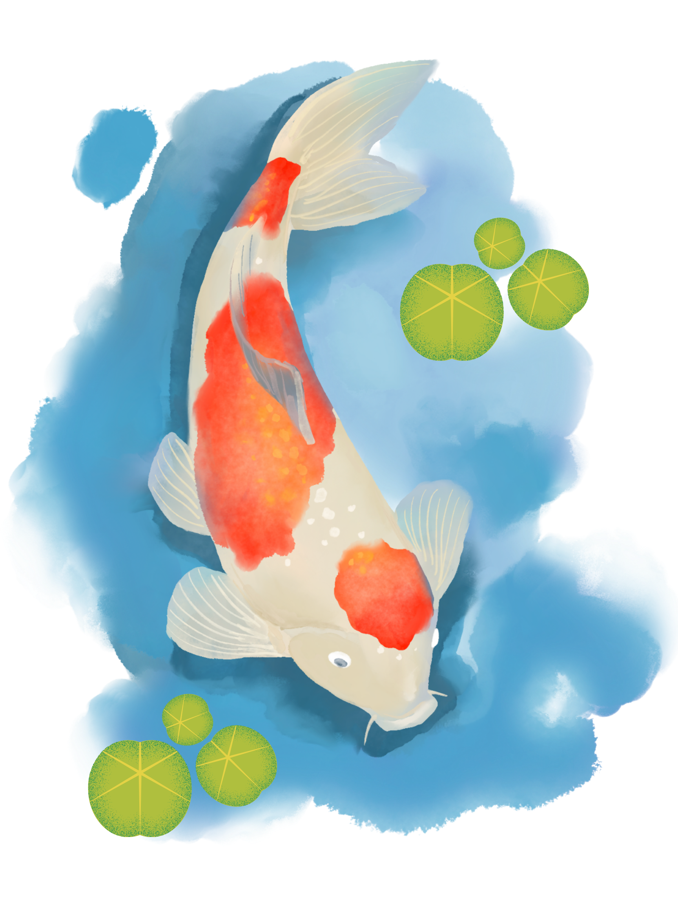
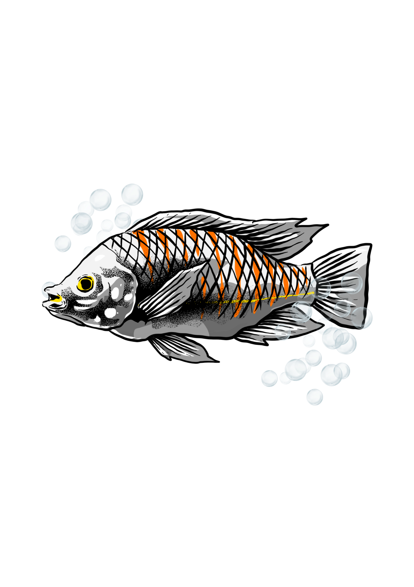
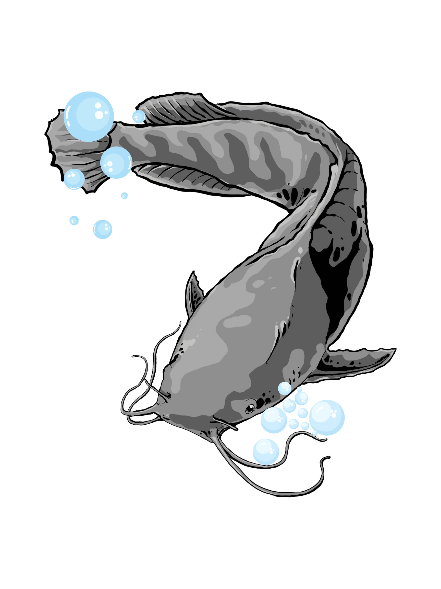

Kenali lebih dekat penghuni kolam SMAN 28 Jakarta

Koi Kohaku adalah varietas ikan koi paling ikonik dengan warna dasar putih bersih bermotif merah (hi) yang menawan. Nama "Kohaku" sendiri berarti merah-putih dalam bahasa Jepang. Ikan ini menjadi simbol keberuntungan dan kemakmuran dalam budaya Asia Timur.
Koi Kohaku membutuhkan kolam besar dengan sistem filtrasi yang kuat karena menghasilkan banyak limbah. Air harus selalu jernih dengan aerasi yang baik. Hindari perubahan suhu mendadak karena dapat memicu stres dan penyakit. Idealnya kolam memiliki kedalaman minimal 1.2 meter.
Pelet premium Jepang dengan probiotik khusus yang meningkatkan warna merah (hi) secara alami. Kandungan protein 35%, sangat mudah dicerna sehingga mengurangi pencemaran air. Diberikan 2x sehari, secukupnya habis dalam 5 menit.
Diberikan 2–3x seminggu sebagai suplemen untuk memperindah warna merah dan putih. Kandungan astaxanthin alami dari ganggang spirulina sangat efektif meningkatkan kilap sisik.
Cacing darah beku (bloodworm), udang krill, dan selada segar bisa diberikan sesekali sebagai variasi gizi. Jangan terlalu sering agar kualitas air tetap terjaga.
⚠️ Perhatian: Kurangi porsi makan saat suhu air <15°C karena metabolisme ikan melambat. Jangan beri makan sama sekali jika suhu <10°C.
| Penyakit | Gejala | Penanganan |
|---|---|---|
| White Spot (Ich) | Bintik putih di tubuh, ikan menggosok-gosokkan tubuh | Naikkan suhu ke 30°C + obat anti-parasit |
| Infeksi Jamur | Bercak kapas putih di sirip atau tubuh | Rendam dalam larutan garam ikan 0.3% |
| Dropsy | Sisik berdiri, perut membengkak | Isolasi ikan, antibiotik + garam ikan |

Ikan Nila Gift (Genetically Improved Farmed Tilapia) adalah strain unggul yang dikembangkan oleh WorldFish Center. Nila Gift tumbuh 85% lebih cepat dari nila biasa, tahan penyakit, dan sangat cocok untuk budidaya sekolah karena mudah dirawat dan beradaptasi di berbagai kondisi air.
Nila Gift sangat adaptif dan toleran terhadap kualitas air yang kurang optimal, menjadikannya pilihan ideal untuk kolam sekolah. Namun untuk pertumbuhan optimal, pastikan kadar oksigen terlarut >5 mg/L dan amonia <0.02 mg/L. Kolam sebaiknya memiliki aerasi yang cukup dan terhindar dari tumbuhan air berlebihan.
Pelet komersial terlaris untuk nila budidaya di Indonesia. Kandungan protein 28–32% dengan harga terjangkau. Kode angka menunjukkan ukuran pelet: 781 untuk benih, 782 untuk remaja, 783 untuk dewasa. Diberikan 3–5% dari bobot tubuh ikan per hari, dibagi 2–3 kali pemberian.
Opsi premium dengan kandungan protein lebih tinggi (35%). Cocok untuk mempercepat pertumbuhan benih nila. Lebih efisien dalam rasio konversi pakan (FCR) sehingga limbah lebih sedikit.
Nila adalah omnivora yang suka memakan ganggang, plankton, dan sisa tumbuhan air. Biarkan sedikit lumut tumbuh di dinding kolam sebagai pakan tambahan alami untuk memangkas biaya pakan.
| Penyakit | Gejala | Penanganan |
|---|---|---|
| Streptococcosis | Renang tidak normal, mata menonjol, perubahan warna | Antibiotik + perbaiki kualitas air |
| Aeromonas | Luka borok di tubuh, sirip sobek, pendarahan | Isolasi + garam ikan + antibiotik |

Lele Dumbo adalah hasil persilangan antara lele Afrika (Clarias gariepinus) dengan lele lokal (Clarias macrocephalus). Dikenal dengan kepalanya yang besar mirip telinga gajah (dumbo), lele ini tumbuh sangat cepat, tahan banting, dan menjadi salah satu ikan budidaya paling populer di Indonesia karena nilai ekonominya yang tinggi.
Lele Dumbo dikenal sangat toleran terhadap kondisi air yang buruk sekalipun, termasuk kadar oksigen rendah, karena memiliki organ pernapasan tambahan (labirin) yang memungkinkannya mengambil oksigen langsung dari udara. Kolam terpal, bak semen, maupun kolam tanah semuanya cocok. Pastikan air tidak terlalu dangkal — idealnya kedalaman 80–120 cm — dan ganti air secara berkala agar amonia tidak menumpuk.
Pelet terapung (floating) khusus lele dengan kandungan protein 30–35%. Jenis terapung sangat dianjurkan karena memudahkan pemantauan nafsu makan — jika pelet masih banyak tersisa setelah 10 menit, itu tanda ikan kenyang atau tidak sehat. Berikan 3–5% bobot tubuh per hari, dibagi 2 kali (pagi & sore).
Merek lokal dengan harga terjangkau dan kandungan nutrisi yang memadai untuk pertumbuhan lele. Cocok digunakan pada fase pembesaran. Tersedia dalam ukuran 1–3 mm sesuai ukuran mulut lele.
Lele adalah omnivora-karnivora. Maggot BSF (Black Soldier Fly), cacing tanah, dan sisa dapur (ampas tahu, bekatul) bisa diberikan sebagai suplemen ekonomis untuk menekan biaya pakan hingga 30%. Pastikan bahan alami dalam kondisi segar dan bersih.
⚠️ Perhatian: Lele bersifat kanibal terutama saat kelaparan dan ukurannya tidak seragam. Lakukan sortasi (grading) setiap 2–3 minggu untuk memisahkan lele berdasarkan ukuran agar pertumbuhan merata.
| Penyakit | Gejala | Penanganan |
|---|---|---|
| Bintik Putih (Ich) | Bintik-bintik putih di kulit dan sirip, ikan sering menggosok tubuh ke dinding | Naikkan suhu air ke 30–32°C + obat Methylene Blue |
| Luka & Kanibalisme | Sirip atau ekor terpotong, luka terbuka di tubuh | Sortasi ukuran, tambah kepadatan pakan, beri garam ikan 0.5% |
| Keracunan Amonia | Lele naik ke permukaan terus-menerus, insang merah gelap | Ganti 50% air segera, kurangi pakan, tambah aerasi |
| Infeksi Bakteri | Borok/luka bernanah, perut kembung, gerakan lambat | Isolasi ikan sakit, rendam dalam larutan PK (Kalium permanganat) encer |